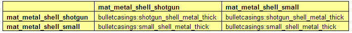
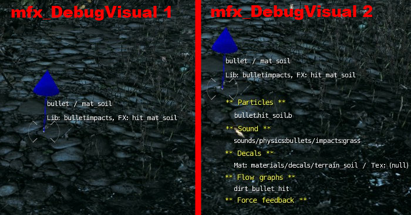

Обзор
Эффекты материала показывают, как материал поверхности реагирует на другие материалы. Например, металлический материал будет реагировать на удары пули иначе (т. е. создавая искры), чем материал травы (т. е. образуя грязь или пыль).
Поскольку жесткое закодирование этих эффектов в коде будет невозможно постоянно обновлять, эти эффекты предоставляются через небольшое количество файлов ресурсов.
Необходимые файлы
- SurfaceTypes, определенный в <Папка проекта>/Assets/Libs/MaterialEffects/SurfaceTypes.xml определяет физические свойства всех доступных типов материалов. Его можно редактировать в любом текстовом редакторе.
- MaterialEffects, который обычно находится в <Папка проекта>/Assets/Libs/MaterialEffects/MaterialEffects.xml, определите взаимодействие двух материалов, т. е. какой эффект будет создаваться при интерактивном событии между двумя типами поверхностей. Например, он определяет, что когда пуля сталкивается с поверхностью почвы, возникает эффект частиц грязи. Этот файл необходимо прочитать и отредактировать с помощью Microsoft Excel.
- Эффект библиотеки, найденные в <Папка проекта>/Assets/Libs/MaterialEffects/FXLibs, содержат связанные эффекты.
Создание нового эффекта материала
Добавление типа поверхности в SurfaceTypes.xml
Тип поверхности определяется элементом XML. SurfaceType. Имя его атрибута — это то, которое можно выбрать в Sandbox..
Определенные здесь типы поверхностей появятся в качестве опций в раскрывающемся списке Material Editor. Другой тип атрибута является необязательным. Его можно использовать в других процессах кода игры. Физические параметры определяются Физика элемент.
Блок физики
Параметр | Описание |
|---|---|
трение | Трение материала (трение – это среднее значение контактирующих материалов). Рекомендуемое значение по умолчанию — 0,8. Внутренне оно ограничено значением 0,1, если оно ниже этого значения. |
эластичность | Также известен как прыгучесть. Усреднено по 2 материалам. Ограничено значением 0, поскольку эластичность не может быть отрицательной. Рекомендуемое значение по умолчанию — 0, если только вы специально не хотите, чтобы что-то прыгнуло. |
breakable_id | Индекс процедурной хрупкости; соответствующая логическая форма резака должна быть зарегистрирована в файле physics.lua. |
пробиваемость | Целое число от 0 до 15, где 0 — наименее пробиваемый. Для каждого луча попадание считается пробивным, если пробиваемость луча меньше пробиваемости материала. |
break_energy | Energy= (масса*скорость^2/2) и относится к сталкивающемуся объекту, который вызывает разрушение (обычно его следует настраивать в зависимости от параметров пули). |
hit_points | Каждое столкновение выше break_energy требует round_to_int(collision_energy/break_energy) очков жизни; настоящий взлом происходит только тогда, когда очки жизни исчерпаны. |
hit_maxdmg | Максимальное количество очков жизни, которое может получить один удар. |
hit_radius | Точки жизни могут быть локализованы с помощью этого радиуса (т. е. потребуется, чтобы все попадания находились в пределах этого радиуса друг от друга); 0 отключает. |
hit_lifetime | Срок действия локализованной информации о попаданиях истекает после этого (обратите внимание, что это всего лишь подсказка; срок действия может истечь раньше, если имеется слишком много новых сведений о попаданиях, или позже, если нет параллелизма). |
hole_size | Характерный размер для логической резьбы; форма зарегистрирована в physics.lua масштабируется по характерному размеру этого размера/формы (указанному в physics.lua). |
hole_size_explosion | То же, что и выше, но для взрывов (первый — для столкновений с пулями и обычными физикализованными объектами). |
breakable_2d | Если установлено, используется 2D-разрушимость вместо логической 3D-резки. |
vehicle_only_collisions | Весь узел будет сталкиваться только с транспортным средством (даже если материал с этим флагом применяется только к некоторым его треугольникам). |
<SurfaceType name="mat_new_material">
<Physics friction="0.5" elasticity="1" pierceability="3" can_shatter="1" />
</SurfaceType>Параметры разрушения определяются breakable_2d элемент.
breakable_2d блок
Параметр | Описание |
|---|---|
blast_radius | Процедурный размер отверстия (обратите внимание, что когда объект попадает на поверхность, вместо этого будет использоваться размер области столкновения – если только он не меньше этого). |
blast_radius_first | То же, что и выше, но для первого удара, разрушающего объект. |
vert_size_spread | Размер вертикального отверстия = blast_radius * (1+random(0..vert_size_spread)). |
rigid_body | Сломанные части будут физикализованы как твердые тела (иначе как физические частицы). |
продолжительность жизни | После этого срок действия частей истечет (сейчас это происходит только тогда, когда игрок отводит взгляд, но это может измениться). |
cell_size | Размер ячейки сетки разрыва (по умолчанию 0,1). |
max_patch_tris | Управляет количеством треугольников сетки в каждом осколке (треугольники берутся из сетки разрушения, вокруг точки попадания и в пределах blast_radius); по умолчанию 6. |
filter_angle | Фильтрует края отверстия под этим углом, чтобы избежать эффекта «пилы»; по умолчанию 0 (отключено), но в большинстве случаев 75 выглядит хорошо. |
shard_density | Используется для расчета массы осколков и свойств плавучести (float/sink); по умолчанию 1200. |
max_fracture | Запускает полный перелом, когда объект поврежден сверх этого (0..1); по умолчанию 1. |
particle_effect | Имя эффекта, создаваемого вдоль сломанных краев. |
fracture_fx | Единичный эффект для каждой поломки. |
full_fracture_fx | Эффект, который воспроизводится при срабатывании состояния полного перелома. |
no_procedural_full_fracture | В случае полного разрушения не генерирует фрагменты процедурно, полагается только на full_fracture_fx. |
use_edge_alpha | Устанавливает альфу вершин вдоль сломанных ребер в 0 (следует использовать, если есть специальный шейдер, который этого ожидает). |
crack_decal_mtl | Наклеивает наклейку из этого материала всякий раз, когда происходит обрыв. |
crack_decal_scale | Устанавливает размер наклейки относительно размера отверстия (0 отключает наклейки с трещинами). |
Помимо <Физика> элемент, необязательный <BreakageParticles> определяет тип частицы, которая будет порождаться при разрушении. Его атрибут тип определяет событие прерывания и может принимать одно из следующих значений:
- поломка
- joint_break
- joint_shatter
- уничтожить
эффект атрибут указывает на эффект частицы, который будет создан при разрушении, вместе с атрибутами count_per_unit, count_scale и масштаб определяя соответственно количество создаваемых систем частиц и их масштаб. Обычно их значение должно быть 1.
Типы поверхностей боеприпасов не нужно добавлять в SurfaceTypes.xml файл.
Добавление событий в MaterialEffects.xml
Новые типы поверхностей необходимо добавлять как в виде строки, так и в виде столбца, и сохранять их в том же порядке. Перекрестная ссылка между двумя типами поверхностей определяет тип события, которое произойдет при взаимодействии.
Типы поверхностей, которые вызываются только кодом, должны иметь только строки и должны быть добавлены внизу, под типами поверхностей, определенными в SurfaceTypes.xml (исключением являются случаи, когда его необходимо использовать на материалах через Material Editor).
Устарело:
Следует отметить, что объекты, для которых необходимо использовать альфа-тест на столкновение (перила и т. д.), должны иметь тип поверхности с суффиксом _RayProxy. Это также используется, чтобы позволить персонажам видеть сквозь стеклянные предметы и является частью системы восприятия.

Добавление событий эффектов материала
События материального эффекта (MFX) — это события, которые происходят при взаимодействии между двумя типами поверхностей, как определено в MaterialEffects.xml. Они названы по следующей схеме:
<MFX_lib_name>:<MFX_name>Например, пулевые воздействия:hit_mat_soil указывает на событие (и элемент XML) hit_mat_soil определено в Игра/Библиотеки/MaterialEffects/FXLibs/bulletimpacts.xml.
Это событие определяется следующим образом в старой системе PFX1 на основе библиотеки, а также в новой системе Particle Effect:
<Effect name="hit_mat_soil" delay="0.05">
<Audio trigger=”Play_impacts_bullet_single”>
<Switch name="surface" state="soil" />
</Audio>
<RandEffect>
<Decal minscale="0.03" maxscale="0.07" lifetime=”60.0”>
<Material>materials/decals/terrain_soil</Material>
</Decal>
</RandEffect>
<RandEffect>
<Particle>
<Name minscale="0.6" maxscale="1.2" maxscaledist="80">particles/bullet_soil_dir.pfx
<Attribute name="strength" type="float" value="0.5"/>
<Attribute name="debris" type="bool" value="0"/>
</Name>
<Direction>Normal</Direction>
</Particle>
</RandEffect>
<FlowGraph name="dirt_bullet_hit" maxdist="2" param1=”0.1” param2=”10.0” />
<ForceFeedback name=”FFNearHit” minFallOffDistance=”0.0” maxFallOffDistance=”2.0” />
</Effect>Изменение атрибутов, установленных в Particle Editor
С помощью новой системы Particle Editor можно изменять атрибуты в bulletimpacts.xml файл тоже. Это можно сделать следующим образом:
<RandEffect>
<Particle>
<Name minscale="0.6" maxscale="1.2" maxscaledist="80">particles/collisions/bullet_soil_dir.pfx
<Attribute name="strength" type="float" value="0.5"/>
<Attribute name="debris" type="bool" value="0"/>
</Name>
<Direction>Normal</Direction>
</Particle>
</RandEffect>Каждое Имя эффекта может иметь следующие необязательные дополнительные атрибуты:
Атрибут | Описание |
|---|---|
Направление | Направление появления эффекта:
|
Миншкала / Максимальный масштаб | Масштаб для применения эффекта, когда камера находится близко или далеко от камеры. |
Максмасштабедист | Расстояние, на котором максимальный масштаб применяется. |
Максдист | Максимальное расстояние для проявления эффекта. |
Добавление типа поверхности боеприпасов
Тип поверхности для боеприпасов является атрибутом имя элемента XML боеприпасы в файле боеприпасов. Его значение должно быть таким же, как значение в таблице MFX.
Отладка
Существует несколько консольных переменных для отладки эффектов материалов в Sandbox или в программе запуска игр:
mfx_Debug: 0 (Отключено) / 1 (Столкновения) / 2 (Поломка) / 3 (Оба)
[MFX] Running effect for: : Mat0=mat_metal_shell : Mat1=mat_concrete impact-speed=5.756900 fx-threshold=2.000000 mass=0.018203 speed=0.147297
- mfx_DebugVisual: 0 (Отключено) / 1 (Базовая визуальная отладка) / 2 (Расширенная визуальная отладка):

- mfx_DebugVisualFilter: 0 (Отключено) / Имя (Показывать только визуальную отладочную информацию для этого эффекта материала).
- mfx_DebugFlowGraphFX: 0 (Отключено) / 1 (Показать отладочную информацию для активированных блок-схем Material Effect)
Material FlowGraphFX manager: Effect Test1 was triggered.
Material FlowGraphFX manager: Effect 'Test1' .Dynamic parameter 'BlendOutTime' set to value 0.056
Невизуальная информация отладки будет отображаться в консоли.
Перезарядка
Чтобы перезагрузить все эффекты материала из MaterialEffect.xml файл можно использовать консольную команду mfx_reload.
Поскольку необходимо иметь совпадающие строки и столбцы в MaterialEffects.xml файле можно установить для mfx_debug значение 1/2/3 для автоматической проверки перед перезагрузкой эффектов материала. Любые предупреждения выводятся на консоль.
Известные проблемы
Таблица MFX склонна к поломкам и неожиданному поведению, когда порядок строк и столбцов отличается от ожидаемого, например. после использования поиска-замены и/или вставки ячеек.